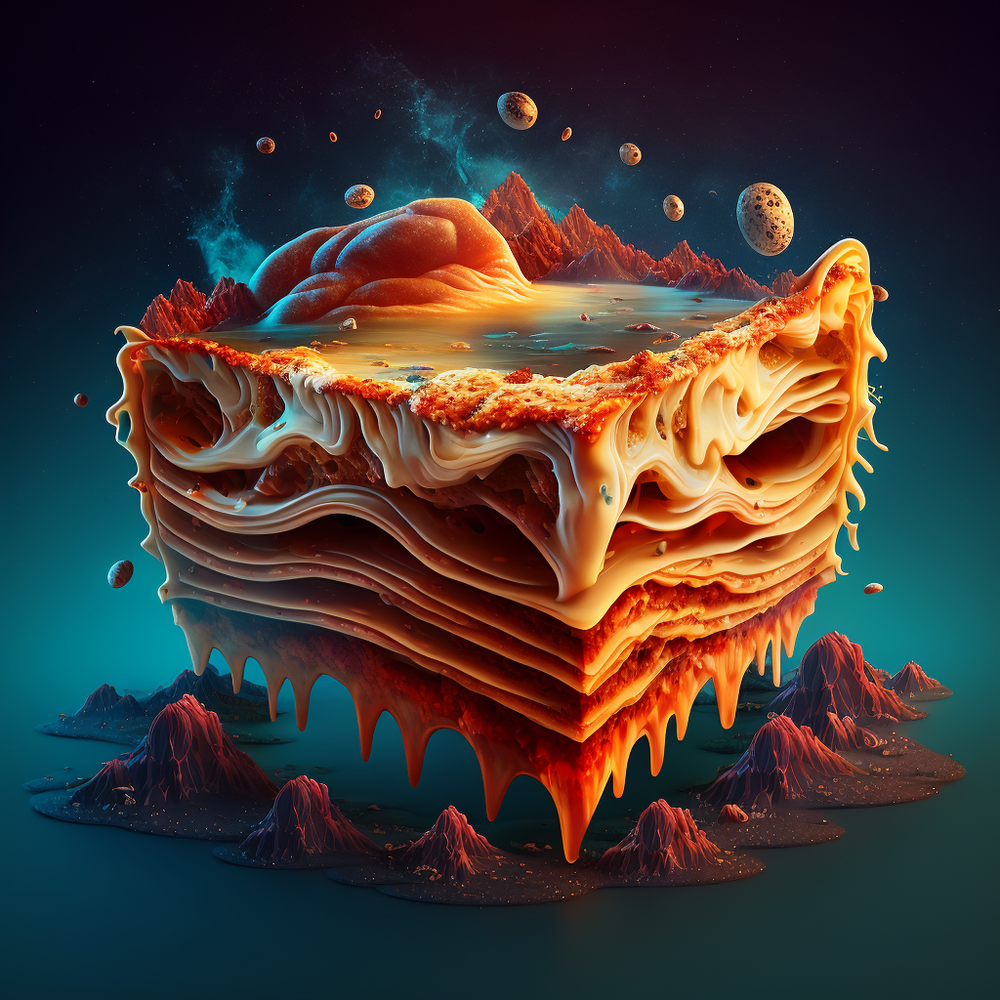

Xythorian Noodle Strand Delight

Ingredients:
- 1 lb. of Xythorian Noodle Strands
- 1 cup of Zorbon Sauce
- 2 lbs. of Thraax Meat, minced
- 1 cup of Valerian Cheese, grated
- 1/2 cup of Eltarian Herbs, chopped
- 1 tsp. of Gornian Spice Powder
- 2 cups of Hestorian Broth
Instructions:
- Preheat your planetary oven to 375°F (190°C).
- Boil Xythorian Noodle Strands in boiling Hestorian Broth until soft, then drain and set aside.
- In a separate pan, sauté Thraax Meat with Eltarian Herbs and Gornian Spice Powder until browned.
- Mix in the Zorbon Sauce and continue to cook until heated through.
- In a baking dish, layer the Xythorian Noodles, meat mixture, and Valerian Cheese. Repeat until ingredients are used up.
- Cover with foil and bake for 25 minutes.
- Remove foil and bake for an additional 10 minutes, or until cheese is melted and bubbly.
- Serve hot and enjoy your delicious and exotic lasagna from another planet!